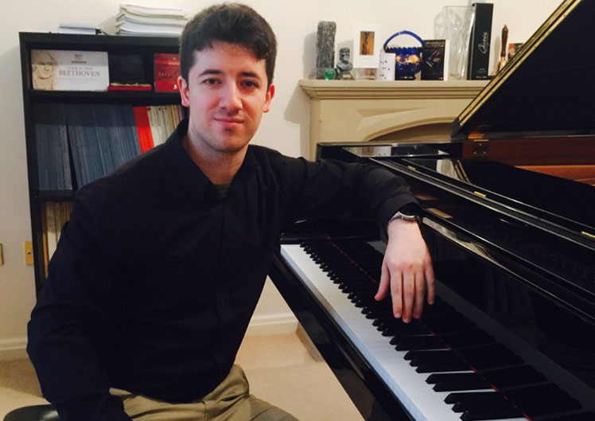
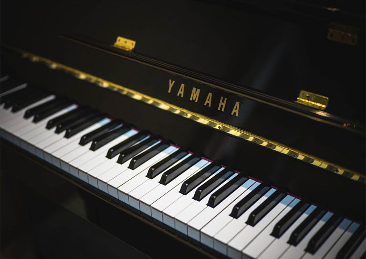

Have been a piano accompanist at Birmingham Conservatoire, the Royal Northern College of Music, at the Guildhall in London and at Warwick School for students and for candidates undertaking exams, concerts, rehearsals, competitions and musical theatre.
Daryoush Salek
BIOGRAPHY
In 2011, he continued his studies at the Royal Northern College of Music in Manchester, with Sally-Ann Macleod, and later with Philippe Cassard and Michel Béroff, graduating with a Masters Degree in Solo Piano Performance. He also studied extensively with Michael Dussek, Head of Piano Accompaniment at the Royal Academy of Music in London, for three years.
Aside from performing, Daryoush is passionate about musicical education. He is a member of the piano faculty at the prestigious Warwick School, one of the UK’s leading and oldest surviving independent educational establishments.


Finalist in the Winifred Micklam Conservatoire Prize and winner of the piano section at Birmingham Conservatoire (2008) and winner of competitions including the Renna Kellaway Prize (2009), the Beryl Chempin Beethoven piano competition (2010) and a finalist in the Recital Prize at the RNCM (2013).

Have studied with a range of accomplished professors including Michael Dussek (Royal Academy of Music), Simon Nicholls, Malcolm Wilson, Victor Sangiorgio, Philippe Cassard, Anthony Saunders, Robert Markham, Jonathan French, Sally-Ann Macleod, Paul Janes and David Jones.